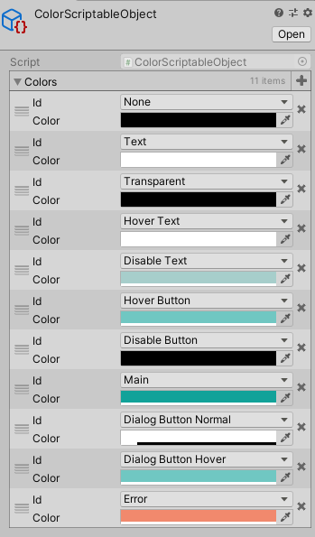

色管理を考える
カラーパレット
Unityで色をどう定義するか悩みの種です。
UIの色などを一括で管理して、色を変更したら参照しているUIはすべて自動的に変わってほしいです。
答えが見つからないので、私はカラー定義用のScriptableObjectを作成して、カラーパレットのようなものを作って、使っています。

色追加するのにコードいじってenum追加しないといけないですが、参照するときenumで参照したいし、一度定義したら新規に色追加することもないので、これでいきます。
//ColorDefine.cs
public enum ColorIds {
None = 0,
Transparent = 5,
Text = 10,
HoverText = 20,
DisableText = 30,
HoverButton = 40,
DisableButton = 50,
Main = 60,
DialogButtonNormal = 70,
DialogButtonHover = 80,
Error = 100
}
[Serializable]
public class ColorDefine {
public ColorIds id;
public Color color;
}
ScriptableObjectの定義は以下。作ったら、ScriptableObjectをエディタ上で生成すれば使えます。
生成したら、Resourcesフォルダ配下にColorScriptableObjectという名前で配置して、起動時にプログラムから読み込みます。
//ColorScriptableObject.cs
public class ColorScriptableObject : ScriptableObject {
public ColorDefine[] colors;
}
staticで色管理用のclassを作って、上記ScriptableObjectを読み込んで使えるようにします。
//ColorPallet.cs
public static class ColorPallet {
static Dictionary<ColorIds, Color> colors;
static ColorPallet() {
//色定義を読み込んで、Dictionaryに保存しておく
colors = new Dictionary<ColorIds, Color>();
var tmp = Resources.Load<ColorScriptableObject>("ColorScriptableObject");
foreach (var s in tmp.colors) {
colors[s.id] = s.color;
}
}
public static Color Get(ColorIds id) {
if (!colors.ContainsKey(id)) return Color.white; //定義されてないのでエラーでも良い
return colors[id];
}
}
UIで使うときはこういう感じになります。
GetComponent<Graphic>().color = ColorPallet.Get(ColorIds.HoverButton);
終わりに
もっと良いやり方あるような気もしますが、一旦プロジェクトはこれでまわっているので良しとします。
あとは、エディタ上でUIいじるときに色が反映されないのでエディタ拡張で色を適用するようにしたら良いと思います。